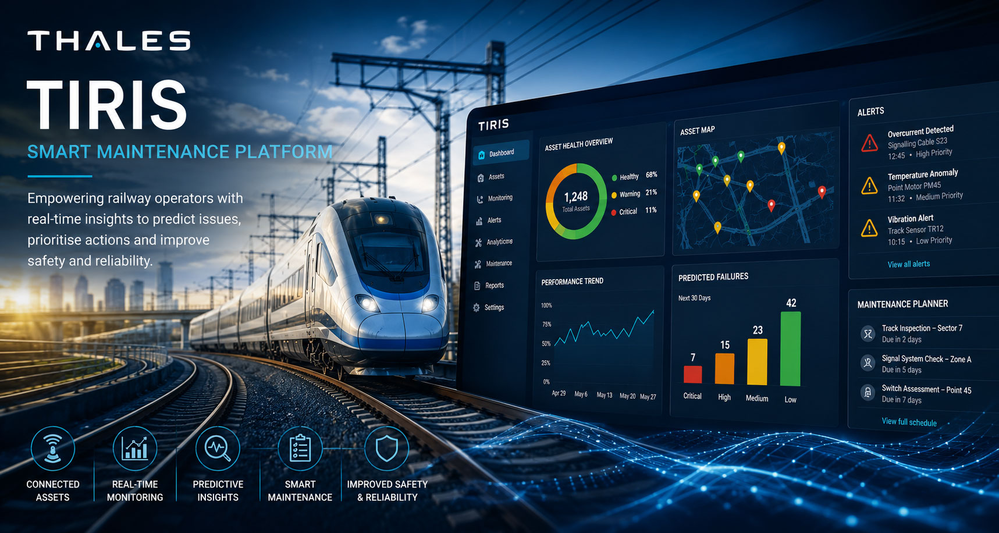

Thales TIRIS Smart Maintenance Platform
Scrum Master & UX/UI Consultant
I worked with Thales on the TIRIS Smart Maintenance Platform, a web-based application used by railway operators worldwide to monitor infrastructure assets, support predictive maintenance and improve operational reliability. The engagement combined Scrum leadership, UX/UI consultancy and hands-on front-end development within a secure enterprise environment.

Project Details
- Client / Organisation
- Thales UK
- Date
- March 2021 – December 2021
- Role
- Scrum Master & UX/UI Consultant
- Project Focus
- Smart maintenance, predictive analytics, railway infrastructure monitoring, Agile delivery and enterprise web application development.
- Technical Environment
- HTML5, CSS3, Sass, JavaScript, jQuery, Polymer JS, Node.js, Web Components, Shadow DOM, Gulp, Bower, Vaadin and Agile Scrum.
Project Focus
TIRIS is a smart maintenance platform developed by Thales to help railway operators monitor the health and performance of critical infrastructure assets. The platform provides real-time operational insights, enabling engineers and maintenance teams to identify potential issues before they become service-affecting failures.
Working within a highly secure environment, I supported the ongoing development and enhancement of the application, helping deliver new functionality, improve existing features and enhance the overall user experience. The platform combined real-time monitoring, predictive analytics and asset management capabilities to support more effective maintenance planning, improve operational efficiency and reduce service disruption across railway networks.
The project formed part of Thales' wider transport technology portfolio and was used by railway operators across multiple countries, providing a modern web-based interface for accessing complex operational data and maintenance information.
My Contribution
As Scrum Master and UX/UI Consultant, I combined Agile delivery responsibilities with hands-on front-end development and user experience consultancy. Working across multiple Scrum teams, I helped coordinate delivery activities, support Product Owners and ensure the successful implementation of new features and enhancements.
Main contributions included:
- Facilitating Scrum ceremonies and sprint planning sessions
- Managing sprint and project backlogs
- Supporting Product Owners with user story refinement and prioritisation
- Developing new front-end features and functionality
- Enhancing existing user interfaces and workflows
- Investigating and resolving application defects
- Improving usability and user experience across the platform
- Collaborating with distributed Agile delivery teams
- Supporting release planning and delivery activities
- Working within a security-cleared development environment
- Contributing to the ongoing evolution of the TIRIS platform
Technical Environment
The application utilised a modern component-based architecture built around Web Components, Polymer JS and Vaadin, supported by HTML5, CSS3, Sass and JavaScript. Development was undertaken within a highly secure Thales environment using company-managed hardware and secure networks, reflecting the critical nature of the transport and infrastructure sectors served by the platform.
The project employed Agile Scrum methodologies with multiple Scrum teams working on different areas of the product, supporting the continuous development and enhancement of a large-scale enterprise application.
Project Outcome
The TIRIS Smart Maintenance Platform continued to evolve as a sophisticated solution for railway infrastructure monitoring and predictive maintenance. Through ongoing feature development, usability improvements and technical enhancements, the platform provided operators with valuable insights into asset health and performance, helping support more efficient maintenance planning, improved operational reliability and enhanced safety.
The engagement provided valuable experience working within a security-sensitive enterprise environment while combining Scrum leadership, UX/UI consultancy and front-end development on a complex, data-driven application used within critical national infrastructure.
X
facebook
linkedin
Instagram
mail